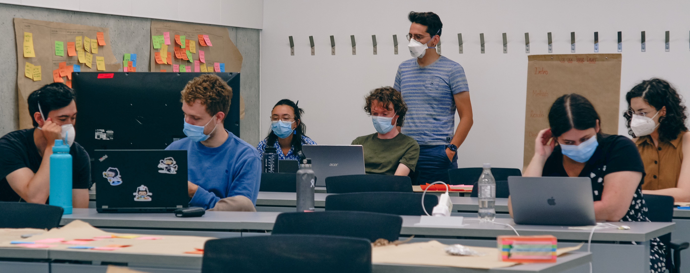
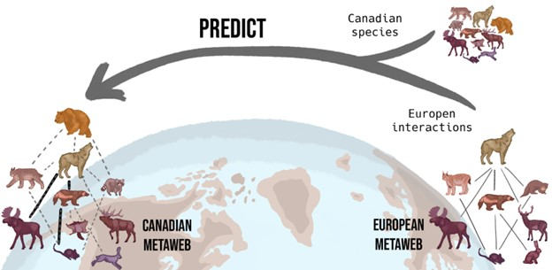

3. Black holes and revelations: Identifying priority sampling locations for local food webs in Canada
With the Computational Biodiversity Science & Services program (BIOS²)
September 2022 (Montreal, Canada)
repo, BiodiversityObservationNetworks.jl

Predicting food webs across space while correctly reflecting their uncertainty is an important goal of network ecology. We took a probabilistic metaweb (a network of potential feeding relationships) for Canada, broke it down into localized units, and propagated the uncertainty of species interactions to highlight areas with uncertain network compositions (black holes) and areas with reliable ones (revelations). The aim of this working group was to identify priority sampling locations for interaction data that would be the most efficient at reducing uncertainty in network predictions.
2. Finding indicator species by assessing the utility of sampled abundance indices
With the Living Data Project (LDP)
September 2021 (virtual )
call for participants
1. Assembling, predicting and refining a predator-prey metaweb for Canada
With the Canadian Institute of Ecology and Evolution (CIEE)
January 2021 ‑ March 2022 (virtual )
code repo, article repo

Food web reconstruction through phylogenetic transfer of low-rank network representation
There are large gaps in our knowledge of the predator-prey interactions that make up food webs, and Canada is no exception. This working group built the first Canadian metaweb of trophic interactions between tetrapods, which documents all of the potential trophic interactions at the national scale. To do so, we predicted potential feeding interactions by leveraging information from the European metaweb using phylogenetic relationships as a medium for transfer.